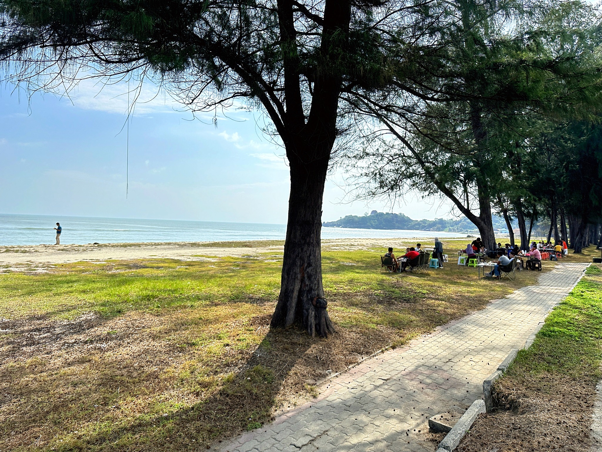
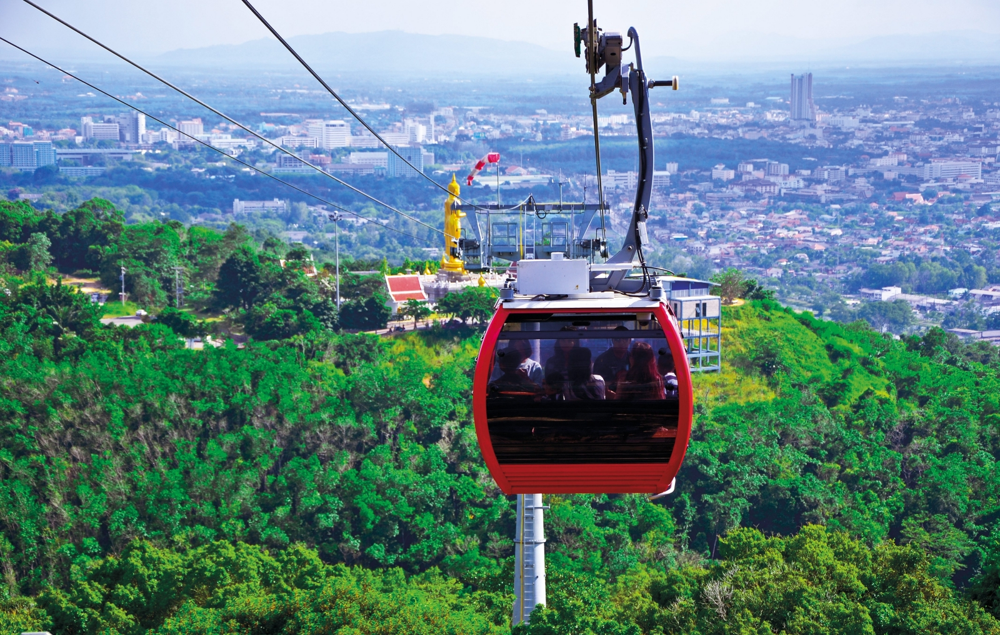
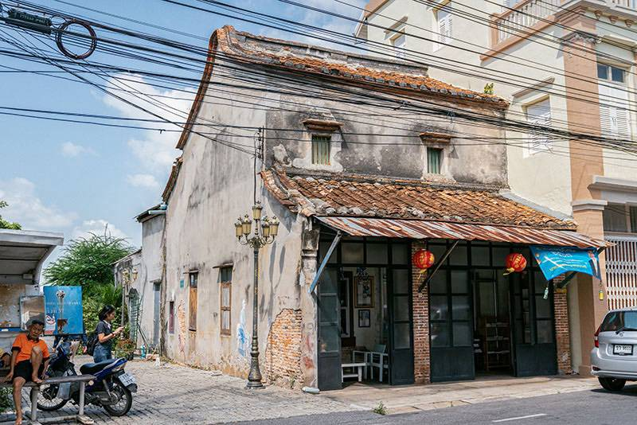
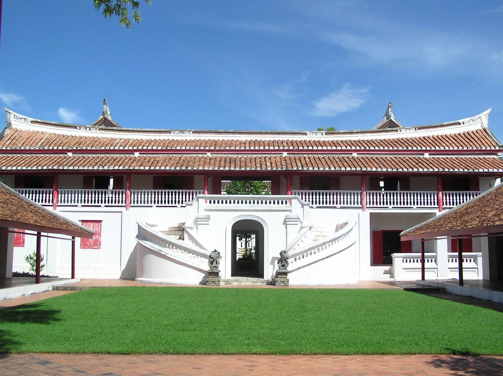
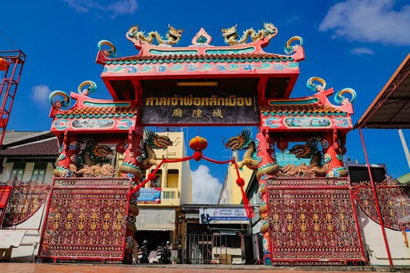
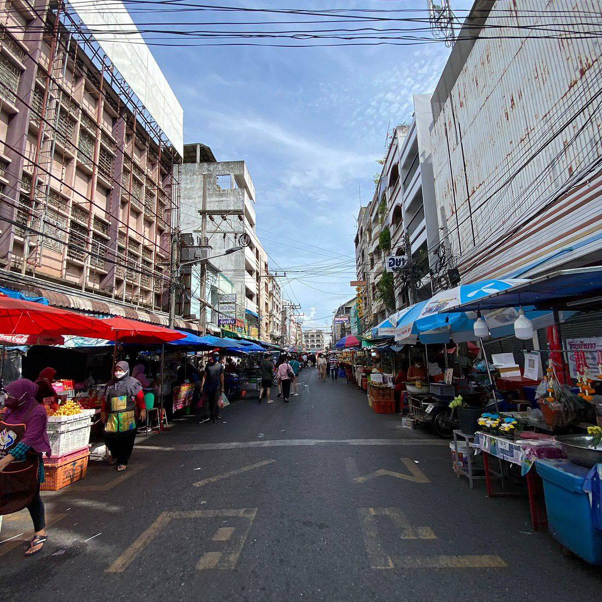
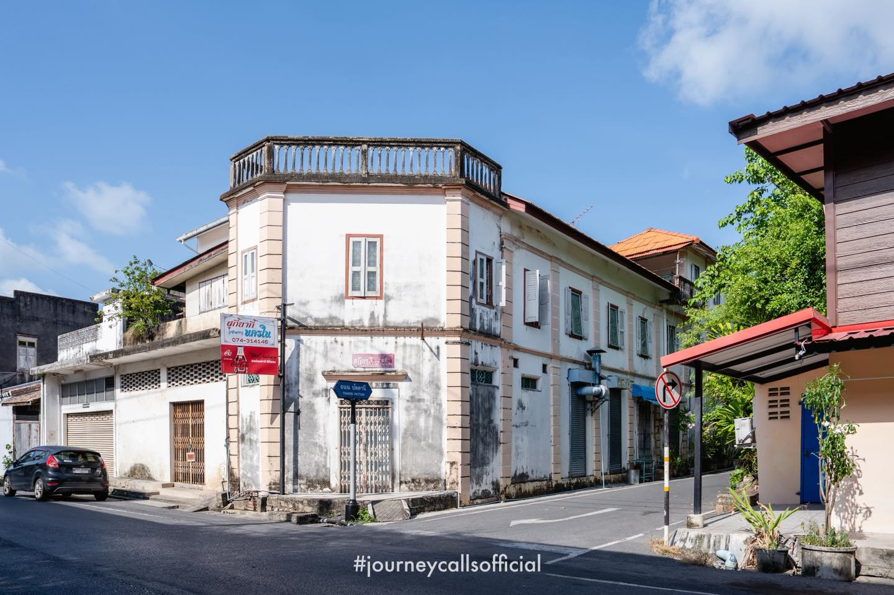
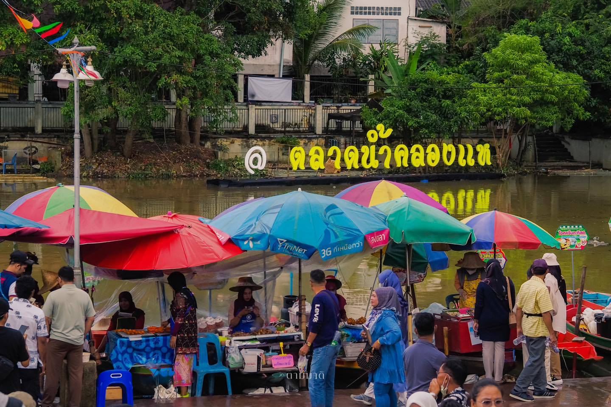
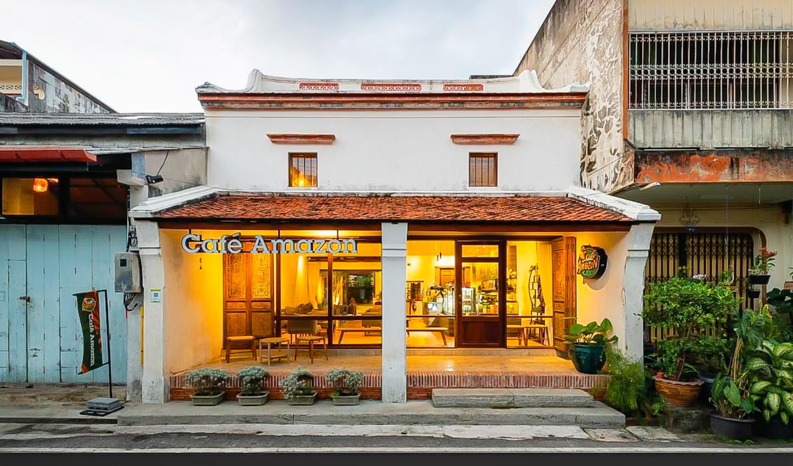
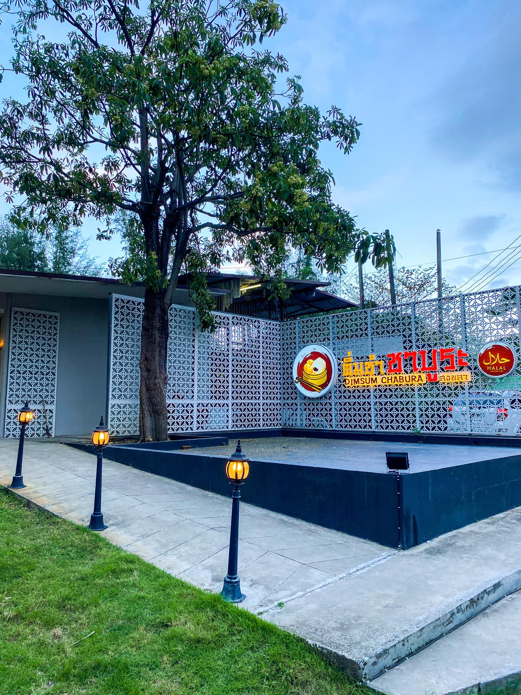

หาดสมิหลา
แลนด์มาร์คอันดับหนึ่งของสงขลา โดดเด่นด้วยรูปปั้นนางเงือกทองคำ ทรายขาวสะอาด และทิวทัศน์ของเกาะหนูเกาะแมว

หาดชลาทัศน์
ชายหาดที่ทอดยาวต่อเนื่องจากหาดสมิหลา ร่มรื่นด้วยทิวสน เหมาะแก่การพักผ่อนและปั่นจักรยานริมทะเล
เขาตังกวน
จุดชมวิวเมืองสงขลาแบบ 360 องศา สามารถขึ้นด้วยลิฟต์หรือเดินขึ้นบันไดพญานาค บนยอดเขามีเจดีย์หลวงคู่เมือง
ทะเลสาบสงขลา
ทะเลสาบแห่งเดียวในประเทศไทย สัมผัสวิถีชีวิตชาวประมงพื้นบ้าน และชมความงามของสะพานติณสูลานนท์
เกาะยอ
แหล่งท่องเที่ยวเชิงเกษตรและวัฒนธรรม มีชื่อเสียงเรื่องผ้าทอเกาะยอและร้านอาหารทะเลวิวสวย

สวนสาธารณะหาดใหญ่
ปอดของเมืองหาดใหญ่ มีกระเช้าลอยฟ้า (Cable Car) แห่งแรกของไทย และสิ่งศักดิ์สิทธิ์บนยอดเขาคอหงส์

ย่านเมืองเก่าสงขลา
เดินชมสถาปัตยกรรมชิโนโปรตุกีสบนถนนนครใน นครนอก และถนนนางงาม พร้อมถ่ายรูปกับสตรีทอาร์ตเก๋ๆ
มัสยิดกลางประจำจังหวัด
ได้รับการขนานนามว่า "ทัชมาฮาลเมืองไทย" มีสระน้ำทอดยาวด้านหน้า ช่วงพระอาทิตย์ตกดินจะสวยงามมาก

พิพิธภัณฑสถานแห่งชาติ
อาคารสถาปัตยกรรมแบบจีน-ยุโรป อดีตเคยเป็นคฤหาสน์ผู้ช่วยเจ้าเมือง จัดแสดงโบราณวัตถุและประวัติศาสตร์สงขลา
วัดมัชฌิมาวาส (วัดกลาง)
วัดเก่าแก่ที่สุดในตัวเมืองสงขลา ภายในมีพิพิธภัณฑ์ภัทรศิลปที่เก็บรวบรวมโบราณวัตถุล้ำค่ามากมาย

ศาลเจ้าพ่อหลักเมือง
สิ่งศักดิ์สิทธิ์คู่บ้านคู่เมือง สถาปัตยกรรมศาลเจ้าแบบจีน ศูนย์รวมจิตใจของชาวไทยเชื้อสายจีนในสงขลา
วัดพะโคะ (หลวงปู่ทวด)
วัดสำคัญในประวัติศาสตร์และเป็นสถานที่จำพรรษาของสมเด็จเจ้าพะโคะ หรือ หลวงปู่ทวดเหยียบน้ำทะเลจืด

ตลาดกิมหยง
แหล่งละลายทรัพย์ชื่อดังของหาดใหญ่ เต็มไปด้วยของฝาก ขนมนำเข้า ถั่ว ผลไม้อบแห้ง และสินค้าราคาถูก

ถนนนางงาม
แหล่งรวมของอร่อยดั้งเดิม ทั้งไอศกรีมโอ่ง ขนมสัมปันนี ซาลาเปาลูกใหญ่ และข้าวสตูร้านดัง

ตลาดน้ำคลองแห
ตลาดน้ำเชิงวัฒนธรรมแห่งแรกของภาคใต้ แม่ค้าพายเรือขายอาหารพื้นบ้านและใช้ภาชนะธรรมชาติ
ไก่ทอดหาดใหญ่ต้นตำรับ
มาถึงสงขลาต้องไม่พลาดชิมไก่ทอดหาดใหญ่กรอบนอกนุ่มใน เสิร์ฟพร้อมหอมเจียวและข้าวเหนียวร้อนๆ

คาเฟ่ย่านเมืองเก่า
นั่งชิลล์ในคาเฟ่ที่ดัดแปลงจากตึกเก่าชิโนโปรตุกีส จิบกาแฟพร้อมซึมซับบรรยากาศสุดคลาสสิก

ติ่มซำยามเช้า
วิถีชีวิตคนท้องถิ่นกับการทานอาหารเช้าสไตล์คนจีน เลือกติ่มซำนึ่งสดใหม่ บักกุ๊ดเต๋ และชาชัก